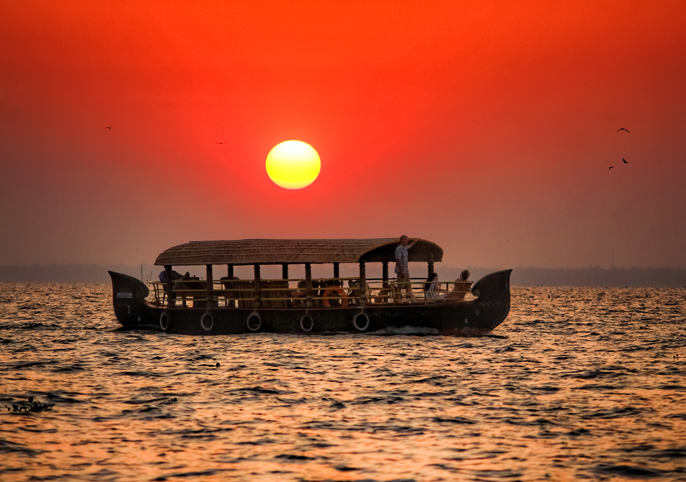

KUMMARAKOM
Kumarakom is a tranquil and picturesque village located on the Vembanad Lake in the Kottayam district of Kerala, India. Known for its serene backwaters, lush green landscapes, and rich biodiversity, Kumarakom is a popular destination for those seeking a peaceful retreat in the lap of nature. The village is part of the Kuttanad region, often referred to as the "Rice Bowl of Kerala" due to its extensive paddy fields below sea level.
The main attraction of Kumarakom is the Vembanad Lake, the longest lake in India, which stretches along the village. The backwaters of Kumarakom are a network of canals, rivers, and lagoons, offering enchanting boat rides through the serene waterways. Visitors can explore the bird sanctuary situated on the eastern banks of Vembanad Lake, which is a haven for migratory birds, including herons, egrets, and Siberian cranes, making it a paradise for birdwatchers.
Kumarakom is also known for its traditional Kerala architecture and houseboats. These houseboats, locally known as "kettuvallams," offer a unique and immersive experience, allowing visitors to cruise along the backwaters while enjoying the natural beauty and tranquility of the surroundings. The village has a range of resorts and homestays that cater to tourists, providing a comfortable stay amidst the idyllic landscapes of Kumarakom.

Kumarakom's history is deeply rooted in the cultural and historical fabric of the Kuttanad region in Kerala. The area has a rich tradition of agriculture and is often referred to as the "Rice Bowl of Kerala" due to its extensive paddy fields. The transformation of Kumarakom into a tourist destination is relatively recent, but the region has a historical background shaped by the cultural and economic practices of the past.
Before the advent of tourism, Kumarakom was primarily an agrarian community with a lifestyle centered around the Vembanad Lake and its backwaters. The traditional practice of farming, fishing, and coir manufacturing was prevalent, sustaining the local economy for generations.
One significant historical aspect is the presence of the St. Mary's Church, believed to be one of the oldest churches in Kerala. The church, built in 1579 by the Portuguese, stands as a testament to the region's historical ties with European colonial powers. Over time, Kumarakom became part of the princely state of Travancore, and its cultural landscape continued to evolve.
The recognition of Kumarakom as a tourist destination gained momentum in the latter part of the 20th century. The picturesque landscapes, serene backwaters, and the unique experience offered by houseboat cruises attracted travelers seeking a peaceful retreat. The development of resorts and the promotion of eco-tourism further enhanced Kumarakom's appeal.
Today, Kumarakom stands as a harmonious blend of its historical roots and modern tourism. Visitors can explore the remnants of the region's colonial past, experience the local way of life, and revel in the natural beauty of the backwaters, making it a unique destination that reflects the historical and cultural essence of Kerala.